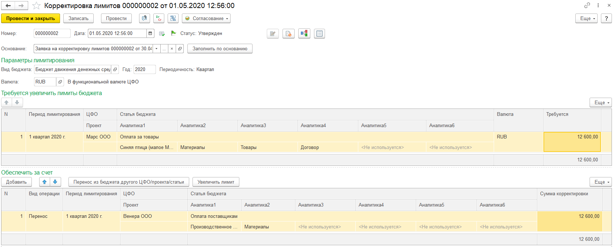

Корректировка лимитов
Предназначена для изменения лимитов. Вводится на основании заявки на корректировку и является её частью. Отображается на закладке "Корректировки" рабочего места "Управление лимитами" (раздел "Планирование и контроль").
Рабочая форма содержит две табличные части. Верхняя таблица "Требуется увеличить лимиты" содержит потребность в обеспечении лимитам т.е сколько лимита требуется по какой статье и ЦФО и сколько лимита свободно. Если корректировка вводится на основании документа основания, то на форме содержится информация об основании. основанием для корректировки могут являться: заявка на оплату, заявка на расход, договоры контрагентов и документ заявка на корректировку.
В нижней части таблица с источниками покрытия лимита. Корректировка поддерживает два вида операции: "Увеличение" и "Перенос". для удобства подбора источников покрытия на форме две кнопки "Перенос из бюджета другого ЦФО/Проекта/Статьи" и "Увеличить лимит". По кнопке "Перенос из бюджета другого ЦФО/Проекта/Статьи" открывается форма подбора установленных лимитов в которой можно подобрать источники. По кнопке "Увеличить лимит" автоматически добавляется строка табличной части, покрывающая недостающую сумму лимита. Пользователь анализирует разницу между колонками Требуется" и "Обеспечено" для понимания завершения корректировки. документ подключен к согласованию. При проведении выполняется корректировка регистра лимитов и документ основание успешно пройдя контроль может двигаться дальше по процессу.
